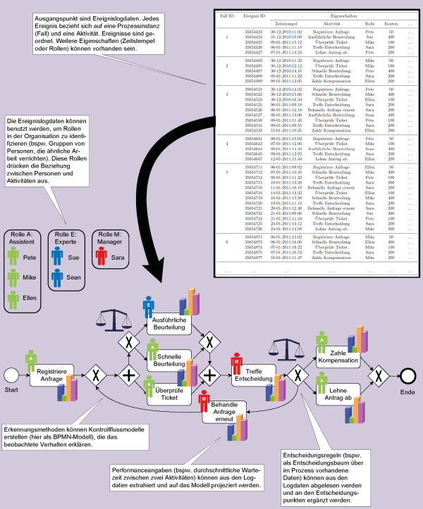
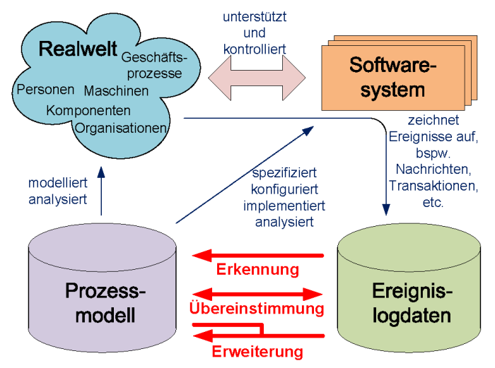
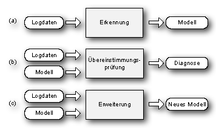

Quelle: http://www.win.tue.nl/ieeetfpm/doku.php?id=shared:process_mining_manifesto
Zusammenfassung
Ein Manifest ist eine "öffentliche Erklärung von Zielen und Absichten", getragen von einer Gruppe von Personen. Das vorliegende Manifest wurde von Mitgliedern und Unterstützern der IEEE Task Force on Process Mining verfasst. Das Ziel dieser Task Force ist die Förderung der Forschung, der Entwicklung, der Ausbildung, der Umsetzung, der Fortentwicklung und des Verständnisses rund um Process Mining.
Process Mining ist eine vergleichsweise junge Wissenschaftsdisziplin, angesiedelt zwischen Computational Intelligence und Data Mining auf der einen Seite und Prozessmodellierung und Analyse auf der anderen. Die Grundidee von Process Mining ist es, reale Prozesse (im Gegensatz zu vermuteten oder angenommenen Prozessen) durch Extrahieren von Wissen aus Ereignislogs heutiger (Informations-)systeme zu erkennen, zu überwachen und zu verbessern. Abbildung 1 skizziert diesen Anspruch. Process Mining umfasst das (automatische) Erkennen von Prozessen (d.h. die Konstruktion von Prozessmodellen für ein Ereignislog), die Übereinstimmungsprüfung (d.h. die Überwachung von Abweichungen durch den Vergleich von Modell und Log), das Erkennen von sozialen bzw. organisatorischen Netzwerken, die automatische Erstellung von Simulationsmodellen, die Erweiterung und Verbesserung von Modellen, das Treffen von Vorhersagen für Fälle, sowie das Ableiten von Empfehlungen auf Basis der Fallhistorie.
 Abbildung 1: Process Mining Techniken extrahieren Informationen aus Ereignislogdaten mit denen Prozesse erkannt, überwacht und verbessert werden können.
Mit Hilfe von Methoden des Process Mining können Einsichten aus Ereignisdaten gewonnen werden, welche heutzutage in vielen Informationssystemen anfallen. Diese Methoden eröffnen neue Möglichkeiten, um Prozesse in einer Vielzahl von Anwendungsszenarien zu erkennen, zu überwachen und zu verbessern. Es gibt zwei wesentliche Gründe für das wachsende Interesse an Process Mining. Einerseits werden immer mehr Ereignisse informationstechnisch erfasst, und somit wird die Historie eines Prozesses im Detail aufgezeichnet. Andererseits besteht das Bedürfnis, Prozesse bei steigender Wettbewerbsdynamik zu verbessern und zu unterstützen. Dieses Manifest wurde von der IEEE Task Force on Process Mining verfasst. Es zielt darauf ab, den Bekanntheitsgrad von Process Mining zu erhöhen. Zudem sollen die aufgeführten Leitprinzipien und Herausforderungen als Anregung für Forscher, Entwickler, Berater, Manager und Endanwender dienen. Das Ziel ist dabei die Anwendbarkeit von Process Mining als Werkzeug der Prozessverbesserung, -überwachung und - unterstützung weiter zu verbessern.
Process Mining stellt eine wichtige Brücke zwischen Data Mining und der Geschäftsprozessmodellierung und Analyse dar. Unter dem Slogan Business Intelligence (BI) wurde eine Vielzahl von Modewörtern eingeführt um einfache Berichts- und Dashboard-Werkzeuge zu vermarkten. Business Activity Monitoring (BAM) ist eine Technik, welche das Überwachen von Geschäftsprozessen in Echtzeit erlaubt. Complex Event Processing (CEP) bezeichnet Techniken, welche die Verarbeitung von großen Mengen an Ereignissen erlauben, um einen Geschäftsprozess in Echtzeit zu überwachen, zu steuern und zu verbessern. Corporate Performance Management (CPM) ist ein weiteres Modewort für das Messen der Leistung eines Prozesses oder einer Organisation. Darüberhinaus gibt es einen Bezug zu Managementansätzen, wie dem Continuous Process Improvement (CPI), Business Process Improvement (BPI), Total Quality Management (TQM) und Six Sigma. Diese Ansätze zeichnen sich dadurch aus, dass ein Prozess "unter dem Mikroskop begutachtet wird" um weitere Verbesserungen zu identifizieren. Process Mining ist somit eine Technik, welche den Einsatz von CPM, BPI, TQM, Six Sigma und verwandten Ansätzen ermöglicht. Während BI-Werkzeuge und Managementansätze wie Six Sigma und TQM auf die Verbesserung der operationellen Leistung abzielen, zum Beispiel die Verringerung von Flusszeiten und Defekten, rücken auch Corporate Governance, Risiken und Compliance verstärkt in den Fokus von Organisationen. Gesetzesinitiativen wie der Sarbanes-Oxley-Act (SOX) und die Basel-II-Vorschriften illustrieren dies für den Fall des Compliance Managements. Process-Mining-Techniken erlauben eine strenge Überprüfung von Compliance, sowie die Beurteilung der Aussagekraft und Zuverlässigkeit von Angaben über die Kernprozesse einer Organisation. Im Laufe der letzten Jahre sind Ereignisdaten jederzeit verfügbar geworden und die Process-Mining-Techniken wurden erheblich weiter entwickelt. Wie bereits angesprochen können Ansätze zur Prozessverbesserung (zum Beispiel Six Sigma, TQM, CPI und CPM) und zum Compliance Management (SOX, BAM, etc.) von Process Mining profitieren. Erfreulicherweise sind Process-Mining-Algorithmen bereits in einer Vielzahl von akademischen und kommerziellen Systemen implementiert worden. Etliche Wissenschaftler widmen sich aktiv dem Process Mining, welches eines der "heißen Themen" der Forschung im Bereich des Geschäftsprozessmanagements geworden ist. Auch von Seiten der Industrie gibt es ein großes Interesse an Process Mining. Mehr und mehr Softwarehersteller erweitern ihre Werkzeuge mit Process-Mining-Funktionalität. Beispiele für Softwareprodukte mit Process-Mining- Fähigkeiten sind: ARIS Process Performance Manager (Software AG), Comprehend (Open Connect), Discovery Analyst (StereoLOGIC), Flow (Fourspark), Futura Reflect (Futura Process Intelligence), Interstage Automated Process Discovery (Fujitsu), OKT Process Mining suite (Exeura), Process Discovery Focus (Iontas/Verint), ProcessAnalyzer (QPR), ProM (TU/e), Rbminer/Dbminer (UPC) und Reflec|one (Pallas Athena). Dieses wachsende Interesse an Log-basierter Prozessanalyse führte zu der Gründung einer Task Force zum Thema Process Mining.
...
Die wachsenden Möglichkeiten, die Informationssysteme und anderen computergestützte Anwendungen bieten, werden treffend von Moores Gesetz charakterisiert. Gordon Moore, Mitgründer von Intel, sagte 1965 voraus, dass die Anzahl der Komponenten in integrierten Schaltkreisen sich jedes Jahr verdoppelt würden. In den vergangenen 50 Jahren war das Wachstum tatsächlich exponentiell, allerdings etwas weniger schnell als vorhergesagt. Dieser Fortschritt ebnete den Weg für ein spektakuläres Wachstum der digitalen Welt und der elektronisch gespeicherten Daten. Zudem sind die digitale und die reale Welt mehr und mehr miteinander verwoben.
Das Wachstum dieser digitalen Welt, welches mit den Prozessen in modernen Organisationen eng verbunden ist, ermöglicht es Ereignisse aufzuzeichnen und zu analysieren. Ereignisse beziehen sich auf eine Vielzahl von Vorgängen wie das Abheben von Geld an einem Geldautomat, das Ausrichten eines Röntgengeräts durch einen Arzt, das Beantragen eines neuen Führerscheins, die Einreichung einer Steuererklärung oder der Empfang eines elektronischen Tickets für einen Flugreisenden. Die Herausforderung besteht darin, diese Ereignisdaten in einer geeigneten Form nutzbar zu machen, zum Beispiel um Vorgänge besser zu verstehen, Engpässe zu identifizieren, Probleme zu antizipieren, Vertragsverletzungen aufzuzeigen, Gegenmaßnahmen vorzuschlagen und Prozesse zu verschlanken. Process Mining zielt genau auf diese Art von Fragen ab.
Ausgangspunkt für Process Mining sind Ereignislogdaten. Alle Methoden des Process Mining gehen davon aus, dass diese Daten die zeitliche Reihenfolge der Ereignisse wiedergeben, und dabei jedes Ereignis einer Aktivität (Prozessschritt) und einem spezifischen Fall (Prozessinstanz) zugeordnet ist. Ereignislogdaten können weitere Informationen über Ereignisse enthalten. In der Tat nutzen Process- Mining-Methoden, wo immer möglich, solche Extrainformationen zu Ressourcen (etwa Personen oder Geräte), die die Aktivität durchführen, den Zeitstempel des Ereignisses oder zu dem Ereignis gehörende Datenelemente (bspw. Auftragsvolumen).
 Abbildung 2: Positionierung der drei wichtigsten Typen des Process Mining: (a) Erkennung, (b) Übereinstimmungsprüfung und (c) Erweiterung.
Abbildung 2 zeigt, dass Ereignislogdaten für drei Arten des Process Mining genutzt werden können. Die erste Art ist Erkennung. Eine Erkennungsmethode nimmt Ereignislogdaten als Eingabe und erzeugt ein Modell ohne dafür weitere Informationen zu benötigen. Prozesserkennung ist die bekannteste Process-Mining-Methode. Für viele Organisationen ist es überraschend zu sehen, dass bestehende Methoden in der Tat echte Prozessmodelle ableiten können, obwohl nur beispielhafte Ausführungen in Form von Logdaten vorliegen. Die zweite Form von Process Mining ist die Übereinstimmungsprüfung. Hierbei wird ein bestehendes Prozessmodell mit zugehörigen Ereignislogdaten verglichen. Die Übereinstimmungsprüfung kann verwendet werden, um zu bestimmen, inwiefern die in den Logdaten dokumentierte Realität tatsächlich mit dem Modell übereinstimmt. Es können hierfür verschiedenen Modelle genutzt werden: Die Übereinstimmungsprüfung kann sich auf Ablaufmodelle, Organigramme, deklarative Modelle, Geschäftsregeln, Richtlinien etc. beziehen. Der dritte Typ des Process Mining ist die Erweiterung. Dabei ist die Idee, ein Prozessmodell auf Basis der Informationen aus den Ereignislogdaten zu erweitern und zu verbessern. Während die Übereinstimmungsprüfung den Unterschied zwischen Realität und Modell misst, zielt diese dritte Art des Process Mining darauf ab das vorliegende Modell zu verändern. Zum Beispiel können anhand der Zeitstempel Engpässe, Durchlaufzeiten und Häufigkeiten im Modell angezeigt werden.
 Abbildung 3: Die drei Arten des Process Mining dargestellt in Bezug auf ihre Eingabe und Ausgabe: (a) Erkennung, (b) Übereinstimmungsprüfung und (c) Erweiterung.
Abbildung 3 zeigt die drei Typen des Process Mining mit Blick auf ihre Eingabe und Ausgabe. Methoden der Erkennung nutzen Ereignislogdaten und liefern ein Modell. Das erzeugte Modell ist typischerweise ein Prozessmodell (bspw. ein Petri-Netz, UML-Aktivitätsdiagramm, BPMN- oder EPK-Modell), kann aber auch andere Perspektiven beschreiben (zum Beispiel ein soziales Netzwerk). Methoden der Übereinstimmungsprüfung benötigen Ereignislogdaten und ein Modell als Eingabe. Die Ausgabe umfasst diagnostische Informationen mit Blick auf Unterschiede und Übereinstimmungen zwischen Modell und Logdaten. Methoden der Erweiterung brauchen ebenfalls Modell und Logdaten als Eingabe. Die Ausgabe ist ein erweitertes Modell.
Process Mining kann weiterhin verschiedene Perspektiven abdecken. Die Kontrollflussperspektive betrachtet den Kontrollfluss, sprich die Abfolge der Aktivitäten. Das Ziel beim Mining dieser Perspektive besteht darin, eine treffende Beschreibung aller Ausführungspfade zu finden. Das Ergebnis wird typischerweise als Petri- Netz oder in Form eines ähnlichen Prozessmodells ausgedrückt (bspw. EPK, BPMN oder UML-Aktivitätsdiagramm). Die Organisationsperspektive stellt Informationen über Ressourcen in Logdaten heraus. Dies können verschiedene Arten von Akteuren sein, bspw. Personen, Rollen oder Organisationseinheiten, und deren Beziehungen zueinander. Das Ziel ist es hierbei entweder die Struktur der Organisation aufzudecken, in dem man Personen den zugehörigen Rollen und Organisationseinheiten zuordnet, oder deren Beziehungen als soziales Netzwerk anzuzeigen. Die Fallperspektive konzentriert sich auf Eigenschaften von bestimmten Fällen. Offenkundig kann ein Fall anhand seines Ausführungspfades und der eingebundenen Akteure beschrieben werden. Ebenfalls kann er mithilfe der Werte der genutzten Datenelemente charakterisiert werden. Im Falle einer Nachbestellung mag es zum Beispiel interessant sein, den Lieferanten zu kennen und die Anzahl der bestellten Produkte. Die Zeitperspektive blickt auf den Zeitpunkt und die Häufigkeit von Ereignissen. Wenn Ereignislogdaten Zeitstempel enthalten, kann man anhand dessen Engpässe entdecken, Service-Levels messen, Ressourcenauslastung bestimmen und die verbleibende Ausführungszeit von laufenden Fällen vorhersagen.
...
Wie für jede neue Technik, gibt es auch für das Process Mining offensichtliche Fehler, welche im praktischen Einsatz gemacht werden können. Aus diesem Grund stellen wir sechs Leitsätze vor, welche Anwender und Analysten vor diesen Fehlern bewahren sollen.
Ausgangspunkt für alle Aktivitäten des Process Mining sind aufgezeichnete Ereignisse. Sammlungen solcher Ereignisse werden Ereignislogs genannt. Dies heißt jedoch nicht zwangsläufig, dass Ereignisse in Form dedizierter Logdateien vorliegen. Ereignisse können in Datenbanktabellen, Nachrichtenlogs, Mailarchiven, Transaktionslogs, und anderen Datenquellen gespeichert sein. Weit wichtiger als das Speicherformat ist die Qualität des Ereignislogs. Die Qualität des Process Mining hängt in großem Umfang von den Eingabedaten ab. [...]
Herausforderungen:
Ziel der IEEE Task Force on Process Mining ist es (a) die Anwendung von Process Mining zu fördern und zu verbreiten, (b) Softwareentwickler, Berater, Manager und Endnutzer bei der Nutzung modernster Techniken zu unterstützen, und (c) die Forschung im Bereich Process Mining weiter voranzubringen und zu stimulieren. Dieses Manifest beschreibt die Grundprinzipien und Intentionen der Task Force. Nach der Einführung von Process Mining, werden in diesem Manifest einige Leitsätze (Kapitel 3) und Herausforderungen aufgezeigt. Die dargestellten Prinzipien sollen dazu dienen häufige Fehler zu verhindern. Die Liste der Herausforderungen hingegen, soll als Wegweiser für Forschung und Entwicklung dienen. Beides soll dazu beitragen, den Reifegrad von Process-Mining-Techniken zu erhöhen.